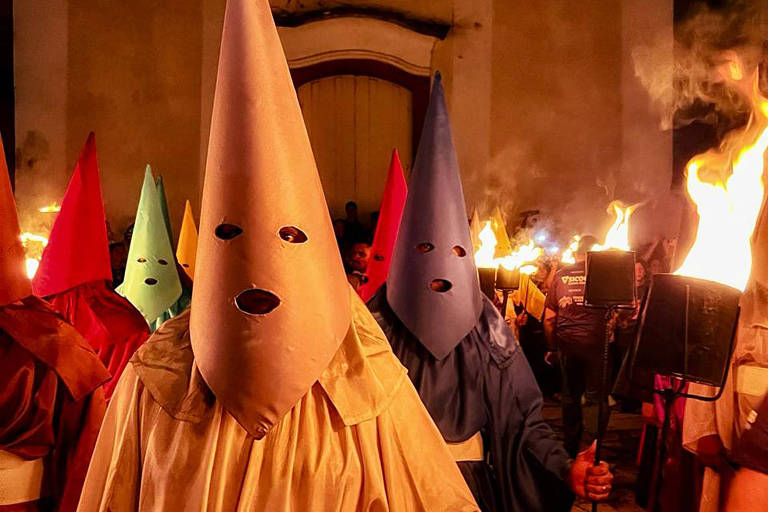
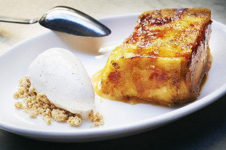

Na Espanha, a Páscoa é sinônimo de "Semana Santa", uma das festividades religiosas mais intensas e espetaculares do mundo. As cidades inteiras param para acompanhar as celebrações que ocorrem nas ruas, unindo arte, música e uma devoção profunda. Ao contrário dos países anglo-saxões, o coelhinho da Páscoa e a caça aos ovos não são o foco; as atenções estão voltadas para a fé e a tradição.
O grande destaque são as procissões organizadas por confrarias (irmandades) locais. Homens conhecidos como "costaleros" carregam andores pesadíssimos e ornamentados, chamados de "pasos", que exibem esculturas antigas de Jesus Cristo e da Virgem Maria. Muitos membros das irmandades desfilam usando os "capirotes", chapéus altos e pontiagudos que cobrem o rosto, simbolizando o arrependimento e a penitência anônima.
No quesito gastronômico, a Espanha também possui suas estrelas. Durante a Semana Santa, o doce mais consumido é a "Torrija", uma sobremesa semelhante à rabanada brasileira, feita de fatias de pão amanhecido embebidas em leite ou vinho, fritas e depois banhadas em mel, açúcar e canela. O cheiro das torrijas toma conta das confeitarias do país, marcando o sabor da Páscoa espanhola.

